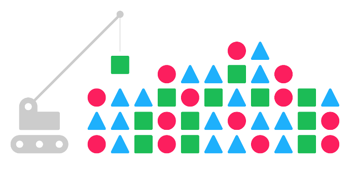
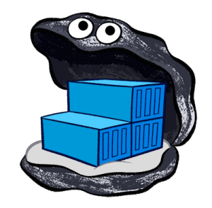

A PaaS for
Continuous Delivery
of
Cloud Native
Apps
https://github.com/atx2016/openstack-summit-austin-2016
About us....
Paul Czarkowski @pczarkowski
Rags
This Talk
Tech Stack
- OpenStack ( BlueBox Cloud )
- Terraform
- DEIS
- Docker Swarm
- Jenkins
- Docker Registry

Architecture
OpenStack
- Kilo
- Nova, Neutron, Cinder (Ceph), Swift, Heat, LBaaSv2
- BlueBox Cloud - Ursula! opensource.
Terraform
About terraform
Why not Heat?
Is it ready for prime time ?
DEIS
 http://deis.io/overview/Docker Swarm

https://docs.docker.com/swarm/overview/
Docker Swarm

Docker Registry
https://docs.docker.com/registry/
Jenkins
https://jenkins.io/
CI/CD of an application
- What app ?
- Dev Workflow - FLOWCHART??!?!?!?!
Dockerfile
FROM jumanjiman/caddy
ADD . /demo
WORKDIR /demo/presentation
ENTRYPOINT ["/usr/sbin/caddy", "-conf", "/demo/presentation/caddyfile", "-root", "/demo/presentation"]
EXPOSE 8080
Dev Workflow
- docker-compose locally
- FORK -> PR -> http://pr-X.atx2016.paulcz.net
- merge to develop, pushes to staging
- merge to master, puashes to production
DEMO!!!!
- terraform apply
- show terraform for swarm
- Accept PR for testing, show jenkins creating dev env
- Merge to Deveop, show jenkins delete dev, upgrade stage
- Merge to Prod, show jenkins upgratde prod
Links
Finish